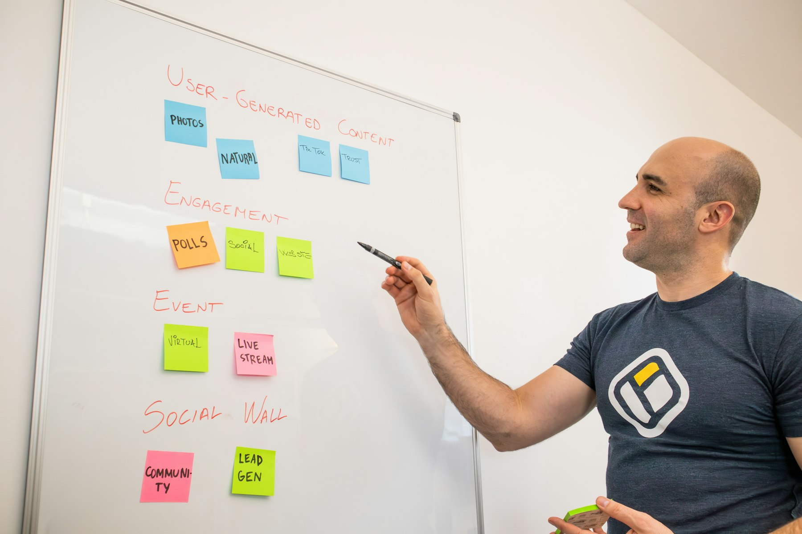

TL;DR
Identify tasks to automate and use simple AI tools like Zapier and Mailchimp to save time. Real scenarios show significant benefits. Understanding balance in automation is crucial. Choose tools based on functionality and ease of integration.
Strategies for Part-Time Entrepreneurs to Enhance Their Side Hustle
Part-time entrepreneurs often juggle multiple tasks, leaving them stretched thin and overwhelmed. Implementing simple automation solutions can streamline processes, yielding time savings and increased productivity.
For example, a graphic designer might use Canva’s AI features to generate quick designs, cutting down design time from hours to minutes. These tools enable entrepreneurs to focus on higher-value tasks, such as client interactions or strategic planning, rather than getting lost in minute details.
By embracing automation, you can reclaim precious hours each week—vital for driving your hustle forward.
Why Traditional Task Management Falls Short for Side Hustlers
Many entrepreneurs rely heavily on manual task management, believing that direct oversight guarantees quality or prevents mistakes. However, this approach often leads to burnout and inefficiency.
For instance, consider a side hustler who spends an average of five hours a week managing social media posts across multiple platforms. This translates to over 260 hours a year—time that could be more effectively spent on refining their product or connecting with customers.
Moreover, handling routine tasks like email responses manually can easily consume another five hours weekly. That’s 10 hours—almost a quarter of a typical work week solely dedicated to low-impact activities.
As obligations grow, the strain on time and energy accumulates, resulting in a significant drop in productivity. For example, a side hustler who neglects to automate email responses might find themselves dealing with an overflowing inbox, causing delays in important communications and potential loss of sales.
One scenario illustrates this well: imagine a graphic designer running a freelance business while juggling a full-time job. She spends her weekends designing and marketing but feels overwhelmed by the mounting administrative tasks.
After a few months, she realizes that her manual approach has led to missed deadlines and unhappy clients. In frustration, she decides to experiment with an AI-driven assistant for scheduling and automating client follow-ups.
The result? She cuts down her admin time by 50%, allowing more focus on design work.
The reality is that as your side hustle grows, so does the necessity for automated solutions. Failing to embrace this shift can lead to diminishing returns on your investment of time and energy, ultimately stalling your business's growth trajectory. Adopting simple AI tools not only saves time but enhances efficiency, allowing you to concentrate on what truly matters in your side hustle.
A Simple Workflow to Identify Automation Opportunities
To effectively streamline your side hustle, start by pinpointing tasks suitable for AI automation. Here’s a straightforward workflow:
- List Your Tasks: Write down daily or weekly tasks—common examples include customer service, bookkeeping, social media management, and content creation.
- Assess for Automation Potential: Identify repetitive tasks. Are they time-consuming yet necessary? If yes, they’re prime candidates for automation.
- Select Appropriate Tools: For instance, consider using Zapier for integrating apps or ChatGPT for drafting emails.
Match tasks with tools that automate processes while maintaining quality.
- Implement in Phases: Start small. Perhaps automate one task initially and monitor its performance before expanding further.
- Measure Effectiveness: Track hours saved weekly to ensure that automation aligns with your goals. Adjust your strategy based on data and feedback to enhance efficiency over time. This conscious workflow allows you to make informed decisions about where to automate.
Real-Life Scenario: Automating an Etsy Shop’s Email Responses

Consider an Etsy shop owner who spends an estimated 10 hours each month handling customer emails. By utilizing tools like Sendinblue or Mailchimp for email automation, she can reduce that time to merely one hour monthly—generating a time savings of nine hours.
This newfound time can be redirected toward creating new products or enhancing marketing efforts. The decision to automate initially requires a small investment in the software, typically around $20 monthly.
However, the payoff comes quickly when you quantify the hourly rate of potential earnings from additional products sold due to increased focus on creative tasks. As such, the implications of automation extend beyond mere efficiency—successful execution can lead to higher sales.
Avoiding the Pitfalls of Over- and Under-Automation
A key mistake many small business owners make is swinging too far toward excessive automation, losing the personal touch with customers. For instance, an online store using fully automated chatbots may frustrate customers with poor interaction quality, as customers desire genuine conversations.
Conversely, under-automation also presents challenges. A freelancer may manually track hours worked instead of employing software like Toggl or Harvest, leading to inaccuracies and potential client disputes.
The trade-off here becomes clear: while there's a comfort in hand-holding each task, real growth often requires letting go. Finding that middle ground—where automation enhances while retaining necessary personal interaction—is crucial.
The Next Steps: Picking the Right AI Tools for Your Side Hustle
Selecting the right AI tools can feel daunting, but a simple set of criteria can guide your decision-making process. Start by evaluating:
- Functionality: Does the tool directly address your specific needs?
- Ease of Use: Is it user-friendly? You want tools that you can set up quickly without extensive delays.
- Integration: Can it seamlessly integrate with other platforms you already use?
- Cost: Assess whether the tool fits within your budget without breaking the bank.
- Support: Check if customer support is readily available for troubleshooting.
Once you identify suitable tools—like Grammarly for proofreading content, Hootsuite for social media scheduling, or QuickBooks for accounting—you can implement them. Taking the time to select wisely ensures longevity in your automated systems, ultimately leading to sustained growth and reduced stress in your side hustle.
FAQ
What are the best AI tools for side hustle automation?
Some popular AI tools include Zapier for workflow automation, Mailchimp for email marketing, and Canva for design.
How can I measure the effectiveness of automation in my side hustle?
Track time saved on tasks, increased sales, or customer satisfaction improvements to gauge effectiveness.
Is it expensive to automate my side hustle?
Costs can vary, with many tools offering scalable plans. Starting with free or low-cost tools can significantly reduce expenses.
This article has been reviewed for practical usefulness and updated to reflect current tools and strategies.
Next step
Use the article as a decision point, not just reading material. Your next system matters more than more browsing.
Search more articles
Find related tools, workflows, and guides.
Photo credits
- Photo 1: Bluestonex via Unsplash
- Photo 2: Kit (formerly ConvertKit) via Unsplash
- Photo 3: airfocus via Unsplash
- Photo 4: Walls.io via Unsplash
- Photo 5: Sweet Life via Unsplash